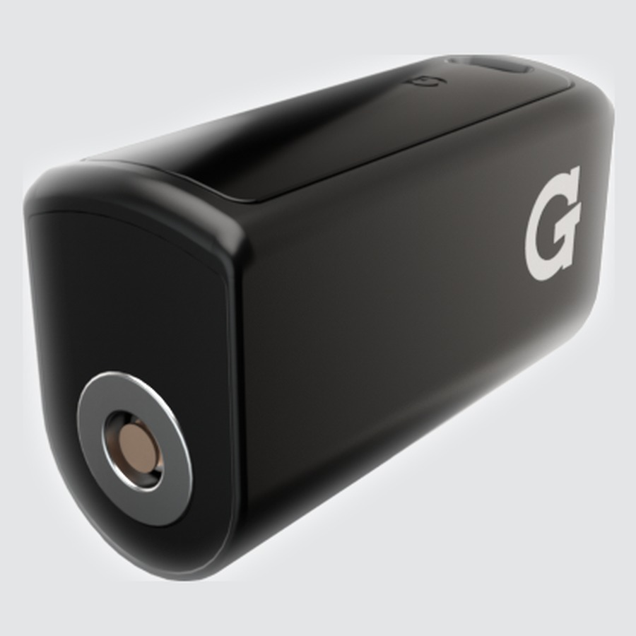
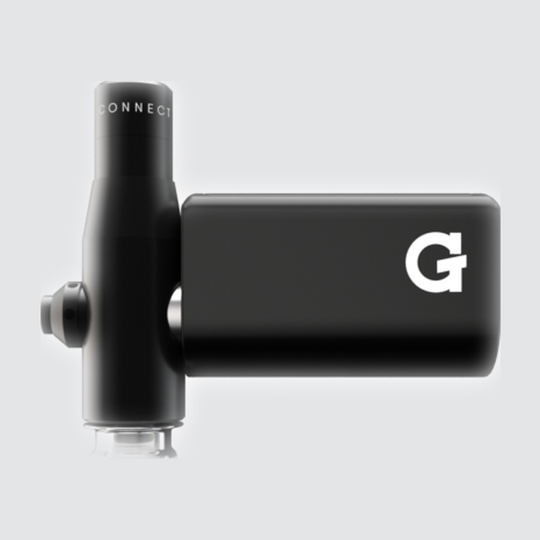
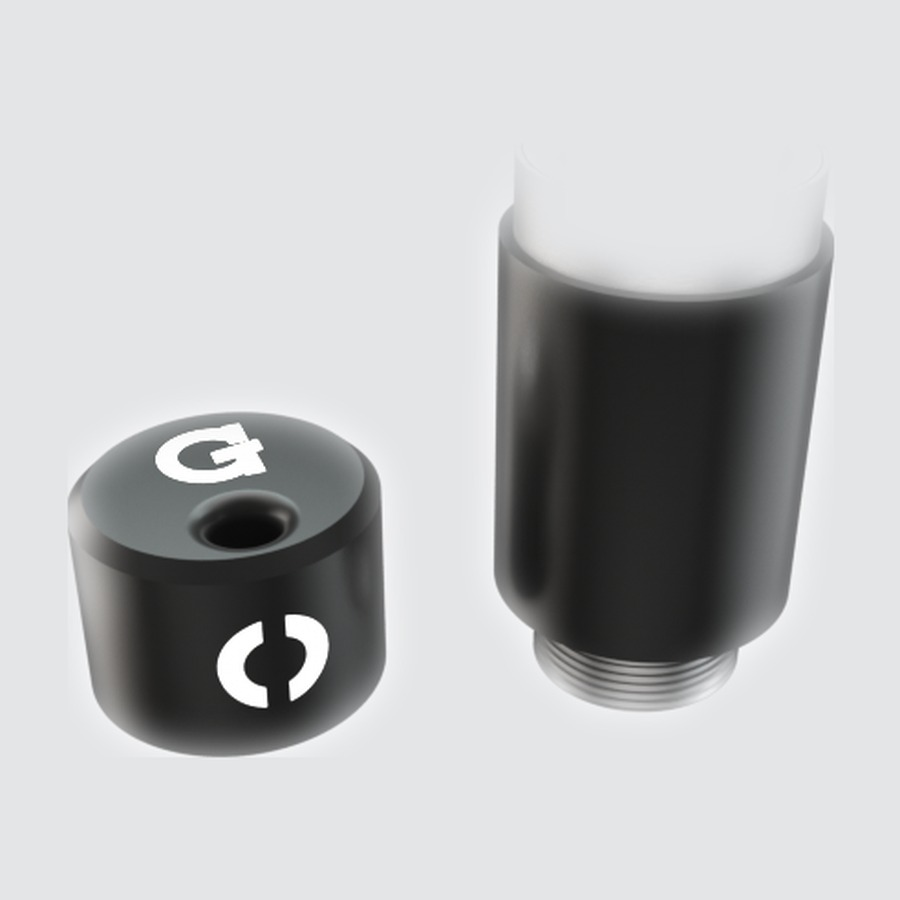
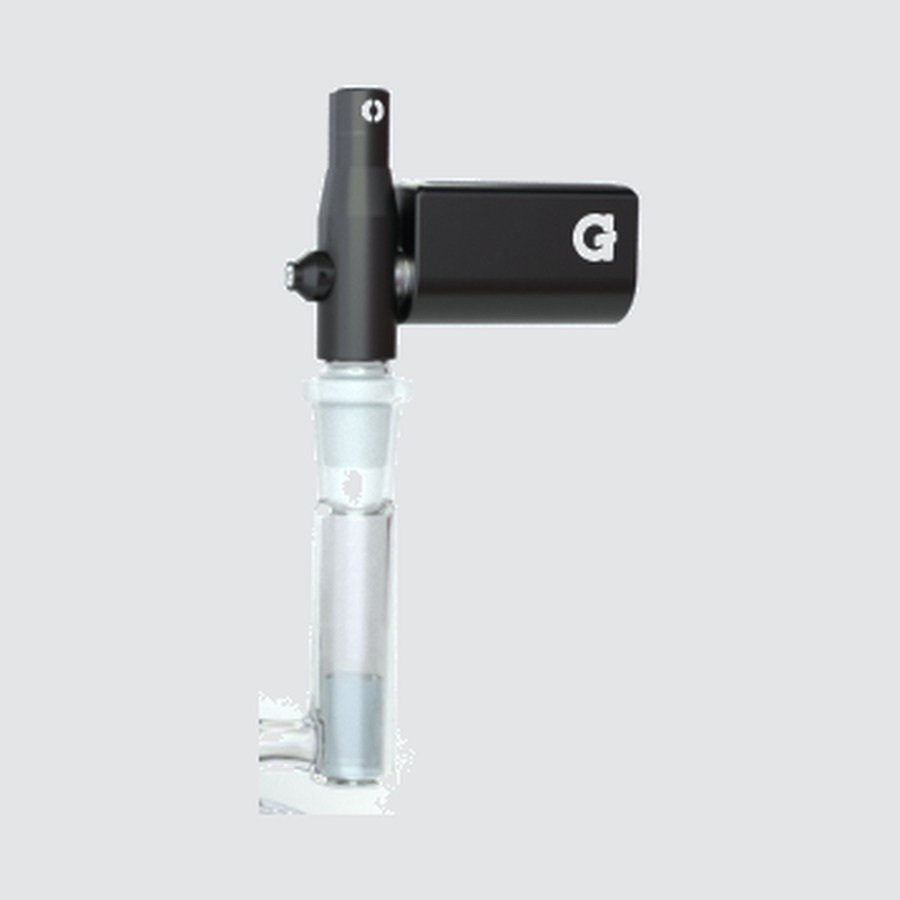

Como usar o seu
G Pen Connect
Registre seu produtoComo usar
-

1Carregar
- Conecte um cabo Micro USB na porta na lateral da carcaça da bateria.
- LED vermelho = carregando · LED verde = totalmente carregado.
- O LED pisca 8 vezes quando a bateria está fraca.
-

2Montagem
- Rosqueie o tanque na parte superior do adaptador.
- Rosqueie o adaptador de vidro macho na parte inferior do adaptador.
- Encaixe o adaptador na junta fêmea de 14mm do seu bong.
O adaptador macho de 14mm serve em bongs padrão. Outros tamanhos de adaptador estão disponíveis separadamente.
-

3Carregar o concentrado
- Remova a tampa do tanque e coloque o concentrado na placa de cerâmica interna.
- Recoloque a tampa do tanque.
- Conecte a bateria ao tanque para completar a conexão.
-

4Aqueça e inale
- Clique 5 vezes para ligar. O LED acende na cor da sua voltagem atual.
- Inale pelo seu bong enquanto aquece.
5×Ligar / desligar 5 cliques para ligar ou desligar3×Nível de voltagem Azul 3,1 V · Verde 3,6 V · Vermelho 4,1 V2×Aquecimento automático 5s de LED piscando durante o aquecimento, depois 10s de calor máximo contínuoSegureAquecimento manual Segure o botão · até 15 segundosLateralMaior fluxo de ar Segure o botão lateral durante uma sessãoApós sessões consecutivas em calor máximo: Aguarde pelo menos 2 minutos antes de tocar na tampa do tanque.
Vídeos
Upgrades
Acessórios e peças de reposição para o seu Connect.


Especificações
Ver detalhes do produto
| Tipo | Vaporizador de concentrados |
|---|---|
| Bateria | 850 mAh |
| Câmara | Placa de cerâmica |
| Voltagem | 3,1 V / 3,6 V / 4,1 V |
| Duração do aquecimento automático | 5s de aquecimento + 10s máx. |
| Duração do aquecimento manual | Até 15 segundos |
| Carregamento | Micro USB |
| Conexão de vidro | Adaptador macho de 14mm (incluso) |
| Garantia | Garantia limitada de 2 anos |
| Dimensões | 33 × 22,5 × 54,6 mm |
| Peso | 99 g |
| SKU | GPC-100‑AJZZ |
| UPC | 811736023986 |
Ajuda
Perguntas frequentes
O dispositivo não liga
Clique no botão 5 vezes rapidamente. Verifique se a bateria está conectada ao tanque. A conexão precisa estar completa para o aparelho funcionar. Se nada acontecer, carregue o dispositivo primeiro.
O LED pisca 3 vezes ao ligar
Três piscadas geralmente indicam um curto-circuito ou que o tanque não está conectado corretamente. Remova a bateria, verifique a conexão do tanque, encaixe-a com firmeza e tente novamente.
O vapor está fraco ou com pouco sabor
Tente uma voltagem mais alta (3× para alternar). Certifique-se de que o concentrado está na placa de cerâmica, e não nas paredes da câmara. Limpe o tanque regularmente. O acúmulo de resíduos é a causa mais comum de queda de desempenho.
A tampa do tanque está quente demais para tocar
Isso é normal após sessões consecutivas em calor máximo. Aguarde pelo menos 2 minutos antes de tocar na tampa do tanque. A superfície do tanque foi projetada para esquentar. É assim que ele vaporiza o concentrado com eficiência.
Dúvidas sobre algum produto?
Fale com a nossa equipe.
Nossa equipe de atendimento ao cliente está com a gente desde o primeiro dia e tem mais de 15 anos de experiência prática com nossos dispositivos. Eles conhecem esses produtos de cor e salteado e vão adorar ajudar você passo a passo ou tirar qualquer outra dúvida que você tenha. A gente adora bater um papo com você sobre tudo o que envolve cannabis e vaporizadores.
Seg–Sex · 10h – 18h EST